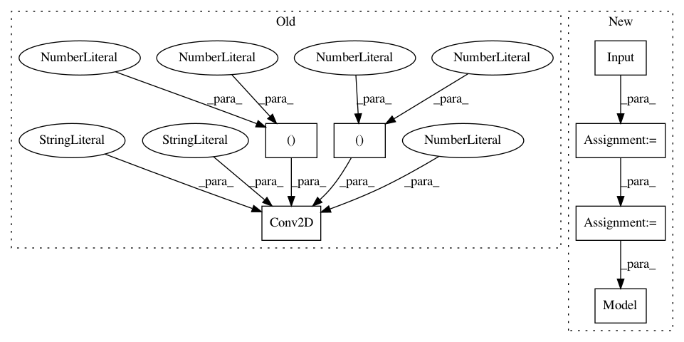

0a80b9769115d291f15c244429793eda4cb8ecad,tests/test_layer_transformer.py,,test_conv_to_wider_layer,#,60
Before Change
def test_conv_to_wider_layer():
a = Conv2D(20, kernel_size=(1, 1),
activation="relu",
input_shape=(28, 28, 1),
padding="same")
b = Conv2D(30, kernel_size=(1, 1),
activation="relu",
padding="same")
model = Sequential([a, b])
After Change
bn1 = model.layers[2]
new_conv1, [new_conv2], [new_bn1] = conv_to_wider_layer(conv1, [conv2], [bn1], 3)
new_input = Input(shape=get_int_tuple(model.inputs[0].shape[1:]))
temp_tensor = new_conv1(new_input)
temp_tensor = new_bn1(temp_tensor)
temp_tensor = Activation("relu")(temp_tensor)
temp_tensor = new_conv2(temp_tensor)
temp_tensor = copy_layer(model.layers[5])(temp_tensor)
temp_tensor = Activation("relu")(temp_tensor)
model2 = Model(inputs=new_input, outputs=temp_tensor)
random_input = get_conv_data()
output1 = model.predict_on_batch(random_input)
output2 = model2.predict_on_batch(random_input)
In pattern: SUPERPATTERN
Frequency: 3
Non-data size: 7
Instances
Project Name: keras-team/autokeras
Commit Name: 0a80b9769115d291f15c244429793eda4cb8ecad
Time: 2017-12-28
Author: jhfjhfj1@gmail.com
File Name: tests/test_layer_transformer.py
Class Name:
Method Name: test_conv_to_wider_layer
Project Name: onnx/onnxmltools
Commit Name: 80e1d0aba201d45ba32542327ab1a63e074a759e
Time: 2018-05-11
Author: wschin@outlook.com
File Name: tests/end2end/test_single_operator_with_cntk_backend.py
Class Name: TestKeras2CoreML2ONNX
Method Name: test_conv_4d